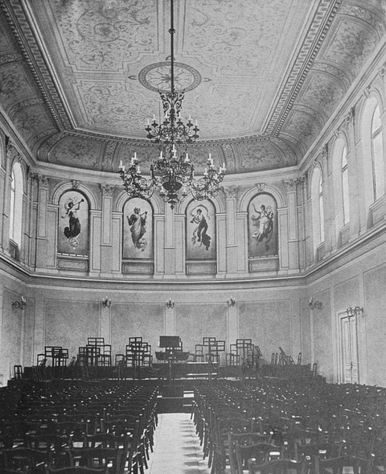
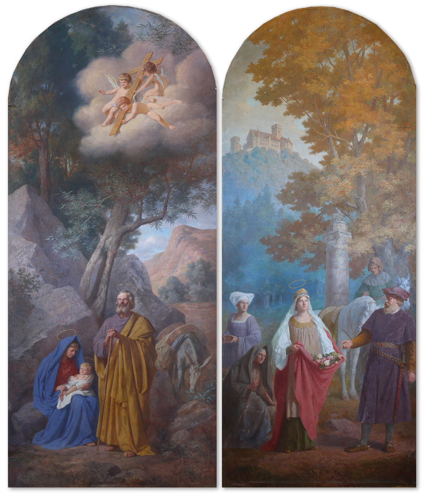
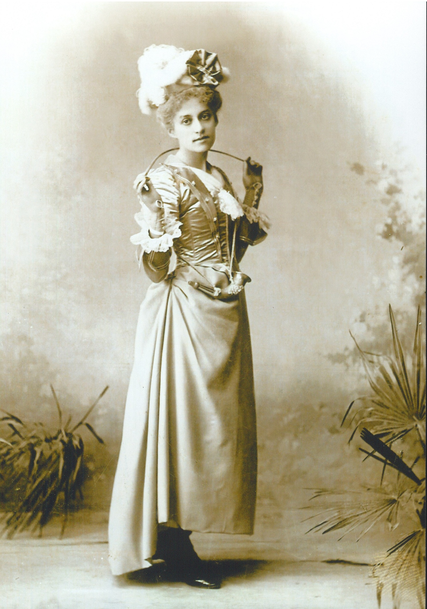
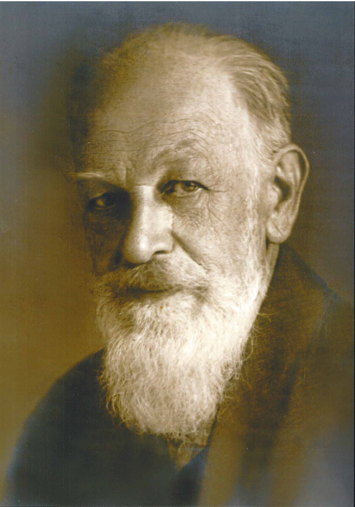

Cultural and Historical Overview of the Life of the Painter Heinrich Wettach (1858–1929), II. The Artist’s Engagement in Ljubljana Social Life and Societies and His Final Years in Carinthia
IZVLEČEK
KULTURNOZGODOVINSKI ORIS ŽIVLJENJA SLIKARJA HEINRICHA WETTACHA (1858–1929), II. SLIKARJEVA DRUŽBENA IN DRUŠTVENA VPETOST V LJUBLJANI TER NJEGOVA ZADNJA LETA NA KOROŠKEM
1Članek obravnava družbeno vpetost slikarja Heinricha Wettacha (1858–1929), ki je deloval v Ljubljani od leta 1885 do konca prve svetovne vojne, ter ga s tem konkretneje usidra tudi v kulturni milje kranjske prestolnice na prelomu stoletja. Pretresa njegovo povezanost z društvi in organizacijami, s katerimi je bil najmočneje povezan, in opredeljuje naravo njegovega sodelovanja z njimi. Zadnji del članka se posveča neprostovoljni odselitvi slikarja in njegove družine iz Ljubljane ter njegovim zadnjim letom na Koroškem.
2Ključne besede: Heinrich Wettach, Ljubljana okoli 1900, nemško čuteči kranjski kulturni krog, slovensko slikarstvo 19. stoletja, avstrijsko slikarstvo 19. stoletja, Filharmonično društvo, Društvo Kazina
ABSTRACT
1The article elaborates on the extensive social commitments of the painter Heinrich Wettach (1858–1929), who lived and worked in Ljubljana from 1885 until the end of World War I, to position him firmly within the cultural context of the Carniolan capital at the turn of the century. It explores his connections with societies and organisations he was dedicated to and defines the nature of his collaboration with them. The last part of the article explores the involuntary move of the painter and his family from Ljubljana and his final years in Carinthia.
2Keywords: Heinrich Wettach, Ljubljana around 1900, German-leaning cultural circle of Carniola, Slovenian 19th-century painting, Austrian 19th-century painting, Philharmonic Society, Kazina Society
1. Engagement in Social Life and Societies
1In the 19th century, individuals were largely engaged in public life through activities provided by different associations and societies. Heinrich Wettach, for example, belonged to a relatively large social structure which we can reconstruct, with a reasonable level of certainty, using newspaper sources. The connected article in the previous issue of this journal mentions his involvement with the Philharmonic Society, which was quite possibly among the key factors that influenced his decision to remain in Ljubljana. The activities of this venerable Ljubljana music society and Wettach’s appearances are recorded in the society’s annual reports that were published between 1863 and 1918. Wettach immortalised their long-time editor, the Philharmonic Society's inexhaustible director and physician Friedrich Keesbacher (1831–1901) with a three-quarter length portrait in 1892.1 The portrait now hangs in the office of the director of the Slovenian Philharmonic, while the main hall is still adorned by Wettach’s personifications of the four symphonic movements.
2Sources portray Wettach as an enthusiastic musician who, since his arrival in Ljubljana in 1885, sang in the male choir of the Philharmonic Society.2 In 1887, he was already a violinist in its orchestra and soon became a regular member of Gerstner’s string quartet, in which he played both the violin and viola.3 The quartet was very well known and popular in Ljubljana, news and reviews of their work can be regularly found in Laibacher Zeitung, sometimes even several times per season. Wettach also appears as a pianist, accompanying female vocal performances. The Philharmonic society was, at the time, by far the finest Ljubljana cultural institution, and its orchestra was, although not professional, recognised for an enviably high level of quality at the turn of the century. Considering all this, Wettach must have been an excellent musician.4 In the 1890s, he started taking over tasks in the Philharmonic Society management. In 1894, he was the custodian for instruments and from 1902 onwards, an archivist.5 The society rewarded him for his loyal collaboration and outstanding services to the institution with an honorary membership in 1919.6

Source: Emil Bock. Die philharmonische Gesellschaft in Laibach. Laibach 1902, n. pag., https://www.dlib.si/stream/URN:NBN:SI:DOC-YTMYSDMS/f312df37-98ce-4fb6-8757-d1c4aefa55a2/PDF
3From 1896 onwards, Wettach is also listed in membership records of the Ljubljana social club Kazina. In his biography, this coincides with the time when, following his 1895 wedding, he firmly decided to put down his roots in Ljubljana. Kazina was a typical bourgeois social association created in the early 1800s, and since the 1830s onwards provided entertainment for Ljubljana’s middle class in the Kazina building on the corner of Congress Square.7 The society provided several services for its members: reading rooms, smoking rooms, a pool room, a ballroom, a coffee house, a restaurant and other facilities for gatherings and offered entertainment for the Ljubljana elite. They organised dances, parties, recitals, lectures, charity events etc. In the second half of the 19th century, a large number of Liberal Party members also belonged to Kazina, but as decades passed and national tensions increased, Kazina gained a reputation as a declaratively German association and a key social and cultural hub for German-leaning Carniolans.8 As a member Wettach participated in different constellations. It is clear from his undertaking time-consuming creations of decorations for venues, sets and costume designs and even tableaux vivants for numerous social and charity events that he was wholeheartedly committed to the association’s activities.9
4At the beginning of the 20th century, Kazina also developed its own programme for visual arts and in a series of exhibitions invited various renowned Central European art associations to exhibit there. Under the leadership of Ottomar Bamberg, they set up a special six-member committee to prepare the exhibitions and Heinrich Wettach was one of its members.10 Alongside foreign and other Austrian authors, the local Carniolan artists or organisations participated in these exhibitions, among them Hans Klein, Elsa Kastl, Frida Weiß, the Carniolan Association for Art Weaving and of course Wettach, who exhibited landscapes, particularly mountain motifs.11

Source: Branko Petauer
5Many painting and family trips to the Carniolan and Carinthian Alps testify to his love for the mountains, trips where they were occasionally joined by other families, for example, the family of the already mentioned musician Hans Gerstner.12 If Wettach was not a member of the German-Austrian Mountaineering Association, he at least moved in its circles. The Association contacted him twice with commissions, and in 1892, he participated in their exhibition in the Philharmonic Society building.13
6All this indicates that the societies and activities that we mention were often connected, and their members merged and mixed.14 If, within the activities and events at the Kazina or the Philharmonic Society, Wettach collaborated with individuals who differed vastly in their political orientation, particularly within the spectrum of the Austrian centralist and German-leaning Carniolans, he also joined some of Ljubljana’s more markedly German-oriented societies.15 Ever since his arrival in Ljubljana, he collaborated, first as a choirmaster and later also as an official, with the German gymnastics society Turnverein, which was at odds with various Slovenian associations, for example, the South Sokol gymnastic society.16
7Besides their enthusiasm for art and culture, the Wettachs both expressed great interest in schooling and education; they were openly partial to associations with uncontestably “German” character, such as Deutscher Schulverein and Südmark. Undoubtedly, this aligned with their general political orientation and engagement, but their interest and commitment perhaps came from the fact that at the beginning of the 20th century, they were parents of four school-age children and found themselves in a position where it was becoming increasingly difficult to secure comprehensive, quality schooling for children and young adults in Carniola in German.17

Source: private collection
8The Wettachs worked with the male and female sections of the Deutscher Schulverein, an organisation that we count as one of the so-called German protective societies (Schützvereine).18 It was established in 1880 in Vienna to encourage and support activities of schools and kindergartens in the German language on linguistic margins and in linguistically mixed areas.19 The jubilee yearbook of the Carniolan Schulverein’s women’s section tells us about Marie Wettach’s involvement.20 The text also specifically thanks her husband, Heinrich Wettach, who often participated in decorating the venues for many a Schulverein’s event.21

Source: private collection
9In 1903, the women's section of the Schulverein applauded the establishment of the women's division of the Südmark, of which Marie Wettach was also a member.22 Südmark was another one of the German protective societies with a more pronounced German nationalist accent. It was established in 1889 in Graz, and its objective was planned migration of poor German-speaking farmers to linguistically mixed rural areas where German was being replaced by Slovenian, for example, in Southern Styria, Carinthia, Carniola.23 While the Wettachs were active each in their own section of Schulverein, it is not entirely clear if Heinrich Wettach was a member of the Südmark’s male division.
10After the family converted to Protestantism in 1901, Marie Wettach became involved in the Evangelical Women’s Society (Evangelischer Frauenverein Laibach) in Ljubljana. The association was visibly engaged in culture, child-rearing and education. As early as the mid-19th century, a school was established next to the Evangelical Church in Ljubljana, which society members assisted financially and in other ways, and in 1901, the association also founded a kindergarten. Among other things, the association strongly supported the demand for women to have access to study in Austrian universities, faculties of medicine and arts.24 Members participated in charity work, mostly when it came to working with children, helping the poor and in the event of natural disasters. For this purpose, the association cultivated a strong social visibility, because it often raised funds by organising charity concerts, raffles and other events.25 Marie Wettach served as the president of the society between 1904 and 1906, and again between 1910 and 1920.26 As many newspaper articles reveal, the society flourished during her terms, including the time of World War I. In that period, members promoted, among other things, the work of the Red Cross.27 Marie Wettach was often singled out in the press as a donor of monetary and other contributions for charity purposes.28
2. The Final Years in Carinthia
1The dramatic events that took place in the second half of 1918 brought a rapid dissolution of Austria-Hungary. Within only a few months, the majority of Carniola went from Austrian to the new Yugoslav authority. As is clear from the memoirs of Wettach’s good friend, the musician Hans Gerstner, individuals who remained partial to the links with the German cultural space and the – at the time already former – imperial Austria, were subjected to considerable pressure in these new circumstances, with many emigrating to the newly created Republic of German-Austria. The new authorities in Carniola banned, among other things, the interests of many institutions and societies that were considered German, such as the Philharmonic Society.29 The property of many such citizens, societies and enterprises in Ljubljana was entrusted to sequestrators after the war.30
2Heinrich Wettach’s family was one of the thirty-five Protestant families who left Ljubljana soon after the war.31 They moved to their holiday house on Lake Ossiach in Carinthia. Gottscheer Bote reported they left in the first third of 1919, when they allegedly sold their two villas situated at a truly elite location in Ljubljana to merchant Grobelnik for 320.000 kroner, which, considering the massive inflation at the time, was a complete bargain.32 According to their grandson, they were only allowed to take one wagon of possessions with them and even a part of this was lost on the way.33 Their financial status changed dramatically. Following the meagre profit from the sale of the real estate in Ljubljana and the ban on transferring funds from erstwhile Carniola in the then-new Yugoslav state to the Republic of German-Austria – which were ultimately decimated by inflation – the Wettachs were recipients of social support in Carinthia.34
3Probably due to financial distress, the Wettachs opened a private educational facility in their house on Lake Ossiach, a home for girls Heimgard (Mädchenheim Heimgard). The advert in the Cillier Zeitung claimed that it was initially intended for girls aged 15 and over who were taught the basic and most important household chores, such as cooking, laundry, sewing, clothes pattern-making, darning and ironing male suits. Heinrich Wettach took over instruction of music, drawing and art history.35 Considering that the programme of the institution changed several times in a few years, we can assume that it was not as successful as they had anticipated.36
4The name Heimgard probably comes from the name of Wettach’s holiday house, which appears in earlier correspondence under this name.37 We can assume that the spouses selected this name following their beliefs, and so “the one that protects home(land)” probably alluded to the protection of the German homeland on the southern border of the German linguistic territory, which was, at the same time, a linguistically mixed territory. In advertisements, the adjective “Aryan” occasionally appeared in the name of the girls’ home – Arisches Mädchenheim Heimgard – which perhaps testifies to how much and in what direction German nationalism intensified in the spouses as they grew older. The dire financial insecurity could have contributed to this, along with the loss of home and high standard of living that the Wettachs had previously enjoyed. The pain of this loss was, in the words of Marie Wettach’s grandson, so great that even though she lived until 1967, she was never able to visit the house and the city in which she lived her most active years and where her four children grew up.38

Source: private collection
5The couple thus continued their life in Carinthia and tried to adjust to the new circumstances, but not only did they bitterly miss their home in the erstwhile Carniola – the painter was deeply affected by the lack of social and cultural life. Disappointed with historical events, including the post-war political order in the new Republic of Austria and with a palpable nostalgia for the time and the city in whose culture and arts he had played such an important role for almost four decades, he wrote to his former student Elsa Kastl:
6Those were beautiful, unforgettable years, full of lively cultural activity and flourishing society, particularly in music, which Ljubljana, once the Slavic hatred and arrogance thwarted everything that was German, will never live to see again. Thank God they are already being rewarded for that. The satisfaction over this is a small compensation for the massive losses that some of us had to suffer.39
7Heinrich Wettach lived in St. Andrä on Lake Ossiach until his death on 1 October 1929. He is buried in the Protestant cemetery in Sankt Ruprecht (am Moos) near Villach.40
8The quick departure from Ljubljana after the end of World War I, as well as events in World War II, probably contributed to the fact that Wettach’s descendants no longer possess many works by their grandfather. The painter’s grandson, Harald Wettach, for example, remembers that as a child in Carinthia, he saw a lot of material, including sketches for the allegories in the Philharmonic Society building, the painter’s self-portrait in a dark suit, a huge folder of watercolours, different mountain motifs etc. Based on his narrative and the narrative of his aunt Brigitta, the house was used as the English officers’ headquarters, while, considering the awkward situation, Marie Wettach eventually moved out. At that time, perhaps the majority of the painter’s remaining works and documents were lost or destroyed.41
* * *
9Heinrich Wettach taught and painted portraits of a number of Ljubljana citizens; he often exhibited his work in Ljubljana and, together with other Carniolans, competed for the limited opportunities in public tenders for painting commissions. His simultaneous outstanding contributions to the musical, social and cultural life of the Carniolan capital made him truly exceptional among its cultural workers, which leads us to conclude that for decades, he was just as recognisable in the streets of Ljubljana as his contemporaries Ivan Cankar and Rihard Jakopič, today Slovenian national icons. It is clear that he, like many other German-leaning individuals, considered Carniola his home and was wholeheartedly dedicated to it,42 strove to the best of his abilities to ensure that it flourished, yet was erased from its history because he imagined its political and cultural framework in a way that differed from (some) Slovenian-leaning Carniolans.43 The actual course of history united Carniola after World War I with South Slavs, whereas Wettach belonged to those Carniolans who saw the past, present and future of the land not only in connection with the German cultural, but also political space.44
10The present study thus tries to at least partially reconstruct the life course and worldview of a seriously overlooked artist in Slovenian art history, and also highlight a part of history without which the knowledge and understanding of Slovenian visual arts and culture at the turn of the century would simply not be complete. Slovenian history without considering the artistic endeavours within the cultural circle of the German-leaning population cannot exist, as German-leaning Carniolans are no less ancestors of contemporary Slovenians than the Slovenian-leaning Carniolans are. Likewise, they are no less important than the latter when it comes to creating the artistic field we have inherited. Without including this segment, we cannot truly understand everything that happened in the Carniolan sphere of visual arts and why, meaning that even “Slovenian” events remain misunderstood and illogically connected, because the events on both sides often happened in sequence, or even as a response to each other.45
3. Acknowledgment
1The article is funded by the Slovenian Research and Innovation Agency (ARIS) as a part of the Research Program P6-0199 History of Art of Slovenia, Central Europe and the Adriatic.
Sources and literature
- Heinrich Wettach's letters to Elsa Kastl, Angelika Hribar’s private archive, Ljubljana.
- Cvirn, Janez. “Kdor te sreča, naj te sune, če ti more, v zobe plune.ˮ Zgodovina za vse 14, No. 2 (2007): 38–56.
- Denkschrift zum 25 jährigen Bestande der Frauen-Ortsgruppe »Laibach« des deutschen Schulvereins: 1885–1910. Laibach: Verlag der Deutschen Schulvereinsschule in Laibach, 1910.
- Dolenc, Ervin. “Deavstrizacija v politiki, upravi in kulturi v Sloveniji.” In Slovensko-avstrijski odnosi v 20. stoletju = Slowenischösterreichische Beziehungen im 20. Jahrhundert, eds. Dušan Nećak et al., 81–94. Ljubljana: Oddelek za zgodovino Filozofske fakultete, 2004. http://hdl.handle.net/11686/26817.
- Hribar, Ivan. Moji spomini I, II. Ljubljana: Slovenska matica, 2022 (reprint of the 1983 edition).
- Ilić, Angela. “Podajmo si roke in srca!.ˮ Stati inu obstati, No. 23/24 (2016): 193–219.
- Jahres-Bericht der philharmonischen Gesellscahft in Laibach: für die Zeit vom 1. Oktober 1885 bis 30. September 1886, ed. Friedrich Keesbacher. Laibach: Verlag der philharmonischen Gesellschaft , 1886.
- Judson M., Pieter. “Versuche um 1900, die Sprachgrenze sichtbar zu machen.ˮ In Die Verortung von Gedächtnis, eds. Moritz Csáky and Peter Stachel, 163–74. Wien: Passagen Verlag, 2001.
- Judson M., Pieter. Guardians of the Nation: Activists on the Language Frontiers of Imperial Austria. Cambridge MA: Harvard University Press, 2006.
- Kuret, Primož. “Jubilejna koncertna sezona 1901–1902 Ljubljanske filharmonične družbe.ˮ Muzikološki zbornik 19 (1983), 41–50.
- Kuret, Primož. Ljubljanska filharmonična družba 1794–1919: Kronika ljubljanskega glasbenega življenja v
- stoletju meščanov in revolucij. Ljubljana: Nova revija, 2005.
- Matić, Dragan. Nemci v Ljubljani: 1861–1918. Ljubljana: Oddelek za zgodovino Filozofske fakultete, 2003.
- Mihelič, Breda. “Vilska četrt med Prešernovo cesto in Tivolijem v Ljubljani ter prenova Wettachove vile:
- Problemi varovanja in prenove stanovanjske četrti.ˮ Varstvo spomenikov 39 (2003): 139–49.
- Mikša, Peter. “‘Da je Triglav ostal v slovenskih rokah, je največ moja zasluga.’ Jakob Aljaž in njegovo planinsko delovanje v Triglavskem pogorju.ˮ Zgodovinski časopis 69, No. 1/2 (2015): 112–23.
- Peternel, Marija Mojca. “Ljubiteljem kranjskih Alp!”: Kranjska podružnica Nemškega in avstrijskega planinskega društva. Ljubljana: Založba Univerze, 2023.
- Selišnik, Irena. “Status državljanstva ob nastanku nove Države SHS: Strategije izbire.” Zgodovinski časopis 164, No. 3–4 (2021): 476–91.
- Selišnik, Irena. “Usode uradnic in uradnikov po prvi svetovni vojni.” Retrospektive 7, No. 1 (2024): 11–39.
- Serše, Aleksandra. “Evangeljsko žensko društvo v Ljubljani 1856–1945.ˮ Etnolog 11 (2001): 57–66.
- Stergar, Rok. “Continuity, Pragmatism, and Ethnolinguistic Nationalism: Public Administration in Slovenia during the Early Years of Yugoslavia.” In Hofratsdämmerung? Verwaltung und Ihr Personal in den Nachfolgestaaten der Habsburgermonarchie 1918 bis 1920, eds. Peter Becker et al., 179–92. Wien: Böhlau, 2020.
- Valant, Miha. “Ljubljansko društvo Kazina in združenja za likovno umetnost na Kranjskem med leti 1848 in 1918.ˮ Phd diss., Ljubljana: Faculty of Arts, 2023.
- Valant, Miha and Beti Žerovc. “Društva za likovno umetnost na Kranjskem v obdobju od 1848 do 1918.ˮ Likovne besede, No. 113 (2019): 4–13.
- Weiss, Jernej. Hans Gerstner. (1851–1939): Življenje za glasbo. Maribor: Litera and Pedagoška fakulteta, 2010.
- Zajc, Marko. “Kazina skozi čas.ˮ In Zgodovinopisje v zrcalu zgodovine: 50 let inštituta za novejšo zgodovino, ed. Aleš Gabrič, 127–38. Ljubljana: Inštitut za novejšo zgodovino, 2009.
- Železnik, Sara. Repertoarne smernice Filharmonične družbe v Ljubljani: Katalogi muzikalij Filharmonične družbe. Ljubljana: Znanstvena založba Filozofske fakultete, 2014.
- Žerovc, Beti. “Ivan Meštrović u Ljubljani 1903./1904.: Prijedlozi za dva spomenika i izlaganje s društvom Hagenbund u ljubljanskoj kazini.ˮ Časopis za suvremenu povijest 56, No. 2 (2024): 249–77.
- Žerovc, Beti. “Cultural and Historical Overview of the Life of the Painter Heinrich Wettach (1858–1929), I. The Painter’s Beginnings and Settling in Ljubljana.” Prispevki za novejšo zgodovino 65, No. 3 (2025): 98–117.
- Žerovc, Beti and Miha Valant. “The Artistic Formation of the Painter Heinrich Wettach (1858–1929) and His Educational Work” [forthcoming].
- Cillier Zeitung, 1925.
- Deutsche Stimmen aus Krain Triest und Küstenland, Beilage des Grazer Tagblattes, 1901.
- Deutsche Wacht, 1886.
- Freie Stimmen, 1929.
- Gottscheer Bote, 1919.
- Grazer Tagblatt, 1896.
- Jahres-Bericht der philharmonischen Gesellscahft in Laibach, 1886.
- Laibacher Wochenblatt, 1886, 1889, 1892.
- Laibacher Zeitung, 1887, 1891, 1892, 1896, 1901–1906, 1916, 1917.
- Neues Wiener Journal, 1928.
- Slovenec, 1914, 1920.
- Slovenski narod, 1915.
- Trgovski list, 1928.
- Villacher Zeitung, 1929.
- Harald Wettach, semi-structured interviews by Beti Žerovc, 2012.
- Brigitta Leitenberger, semi-structured interview by Ruth Deutschmann, 1998 [The Austrian director Deutschmann conducted the interview as part of the Chronisten project: https://chronisten.at/].
Beti Žerovc
KULTURNOZGODOVINSKI ORIS ŽIVLJENJA SLIKARJA HEINRICHA WETTACHA (1858–1929), II. SLIKARJEVA DRUŽBENA IN DRUŠTVENA VPETOST V LJUBLJANI TER NJEGOVA ZADNJA LETA NA KOROŠKEM
POVZETEK
1Članek obravnava družbeno vpetost slikarja Heinricha Wettacha (1858–1929), ki je deloval v Ljubljani od leta 1885 do konca prve svetovne vojne, ter ga s tem konkretneje usidra tudi v kulturni milje kranjske prestolnice na prelomu stoletja. Pretresa zlasti njegovo povezanost z društvi in organizacijami, s katerimi je bil najmočneje povezan, in opredeljuje naravo njegovega sodelovanja z njimi.
2Iz različnih virov je razvidno, da je bil Wettach navdušen glasbenik, ki je že od leta 1885, torej vse od prihoda v Ljubljano, prepeval v moškem zboru Filharmonične družbe. Že leta 1887 ga zasledimo kot violinista v njenem orkestru, prav tako pa je kmalu postal redni član t. i. Gerstnerjevega godalnega kvarteta, v katerem je igral violino in violo. Od leta 1896 je naveden tudi v popisih članov ljubljanskega družabnega društva Kazina, kjer je sodeloval v najrazličnejših okvirih. Da mu za društvene dejavnosti ni bilo škoda časa, priča pogosto prevzemanje zamudnega izdelovanja raznih umetniških okrasitev prostorov, scenografij in kostumografij ter celo živih slik za številne družabne in dobrodelne dogodke. Kazina je v začetku 20. stoletja razvila tudi lasten program za likovno umetnost in k razstavljanju v svojih prostorih povabila nekatera vidnejša srednjeevropska umetniška združenja. Ob tujih in drugih avstrijskih avtorjih so na teh razstavah sodelovali domači kranjski umetniki, tudi Wettach.
3Če je v okviru Kazine ali Filharmoničnega društva ter njunih dejavnosti Wettach sodeloval z zelo različno politično usmerjenimi posamezniki predvsem znotraj spektra avstrijsko centralistično in nemško čutečih Kranjcev, pa se je v Ljubljani pridružil še nekaterim izraziteje nemško orientiranim društvom. Vse od svojega prihoda v Ljubljano je, sprva kot zborovodja, nato pa tudi kot funkcionar, sodeloval s telovadnim društvom Turnverein. Oba s soprogo sta sodelovala vsak v svojem oddelku Schulvereina, ni pa popolnoma jasno, ali je bil Heinrich Wettach član moškega oddelka Südmark. Vsekakor je v ženskem oddelku tega društva sodelovala Marie Wettach. Po prestopu družine v evangeličansko vero leta 1901 je bila še posebej aktivna v ljubljanskem Evangelijskem ženskem društvu, tudi kot predsednica v letih 1904–1906 in ponovno 1910–1920.
4Zadnji del članka obravnava neprostovoljno odselitev slikarja in njegove družine iz Ljubljane leta 1919 ter njegova zadnja leta na Koroškem. Družina Wettach je bila po prvi svetovni vojni svoji dve ljubljanski vili na zares elitni lokaciji prisiljena prodati za bagatelo. Po skromnem izkupičku od prodanih nepremičnin in prepovedi prenosa denarnih sredstev iz nekdanje Kranjske v tedaj novi jugoslovanski državi v Republiko Nemško Avstrijo sta zakonca Wettach na Koroškem prejemala podporo za revne. Naselila sta se v svoji počitniški hiši na Osojskem jezeru in tam, verjetno predvsem zaradi finančne stiske, odprla zasebno izobraževalno ustanovo, dekliški dom Heimgard (Mädchenheim Heimgard). Zaradi večkratnih sprememb programa ustanove v le nekaj letih lahko domnevamo, da ta ni delovala po njunih pričakovanjih. Slikar je v Sv. Andražu na Osojskem jezeru živel vse do smrti 1. oktobra 1929.
5Pričujoča razprava tako po eni strani poskuša rekonstruirati vsaj del življenjske poti in nazorov spregledanega umetnika v slovenski umetnostni zgodovini, po drugi pa tudi košček zgodovine, brez katerega poznavanje in razumevanje slovenske likovne umetnosti in kulture na prelomu stoletja preprosto ne more biti celovito. Slovenske zgodovine brez upoštevanja umetnostnega dogajanja znotraj kulturnega kroga nemško čutečih namreč ne more biti, saj nemško čuteči Kranjci niso nič manj predniki sodobnih Slovencev, kot so to slovensko čuteči Kranjci. Prav tako tudi niso nič manj kot slednji oblikovali umetnostnega polja, ki smo ga podedovali. Brez vključevanja tega segmenta tako ne moremo zares razumeti, kaj vse se je v kranjskem likovnem polju dogajalo in zakaj, pri čemer tudi »slovenski« dogodki ostajajo nepravilno dojeti in nelogično povezani, saj so dogodki na obeh straneh pogosto potekali v sosledju ali celo kot odziv enih na druge.
* PhD, Associate Professor, Department of Art History, Faculty of Arts, University of Ljubljana, Aškerčeva 2, SI-1000 Ljubljana, beti.zerovc@ff.uni-lj.si
1. “Philharmonische Gesellschaft,ˮ Laibacher Zeitung, CXI/8, 12 January 1892, 67.
2. Friedrich Keesbacher, ed., Jahres-Bericht der philharmonischen Gesellscahft in Laibach: für die Zeit vom 1. Oktober 1885 bis 30. September 1886 (Laibach: Verlag der philharmonischen Gesellschaft , 1886), 35.
3. Beti Žerovc, “Cultural and Historical Overview of the Life of the Painter Heinrich Wettach (1858–1929), I. The Painter’s Beginnings and Settling in Ljubljana,” Prispevki za novejšo zgodovino 65, No. 2 (2025): 98–117. See fn 21 and 22.
4. He also performed and participated in organising the celebrations of the Philharmonic Society's bicentennial in the Anniversary season 1901/1902, which was one of the most resonant and music events of the season in Austria. As a musician in one of the most venerable music societies in Central Europe, he performed and met with very important people in the Austrian music world. – Primož Kuret, “Jubilejna koncertna sezona 1901–1902 Ljubljanske filharmonične družbe.ˮ Muzikološki zbornik 19 (1983), 41–50.
5. Sara Železnik, Repertoarne smernice Filharmonične družbe v Ljubljani: Katalogi muzikalij Filharmonične družbe (Ljubljana: Znanstvena založba Filozofske fakultete, 2014), 34–37.
6. Primož Kuret, Ljubljanska filharmonična družba 1794–1919: Kronika ljubljanskega glasbenega življenja v stoletju meščanov in revolucij (Ljubljana: Nova revija, 2005), 445. Wettach worked devotedly for the Philharmonic Society even during World War I. For this reason, the article in the Laibacher Zeitung described him, together with Hans Gerstner and Viktor Ranth, as “one of the three founding pillars on whom the pursuit of music rests in the Philharmonic Society in the time of war.” – “Das fünfte Gesellschaftskonzert der Philharmonischen Gesellschaft,ˮ Laibacher Zeitung CXXXVI/79, 6 April 1917, 515.
7. Miha Valant, “Ljubljansko društvo Kazina in združenja za likovno umetnost na Kranjskem med leti 1848 in 1918ˮ (doctoral dissertation, Ljubljana: Faculty of Arts, 2023), 1–30. The overview of the Kazina Society membership reveals that in Wettach’s time, many Carniolans at the peak of their careers in the fields of finance, industry, commerce, politics, as well as arts belonged to it, for example musicians Hans Gerstner and Josef Zöhrer, printer Ottomar Bamberg, merchant Josef Luckmann, members of the families Kosler, Galle etc. Members included the managers of the Carniola Savings Bank. See fn 47.
8. A concise summary of the history of the Kazina Society from its establishment to its demise after World War II was presented by Marko Zajc, “Kazina skozi čas,ˮ in Aleš Gabrič, ed., Zgodovinopisje v zrcalu zgodovine: 50 let inštituta za novejšo zgodovino (Ljubljana: Inštitut za novejšo zgodovino, 2009), 127–38. On the division of Carniolans into Slovenian-leaning and German-leaning in the field of culture and the role of Kazina and other visual arts associations in the growing conflict at the end of the 19 th century, see Valant, “Ljubljansko društvo Kazinaˮ, 189–91 et passim.
9. “Wohltätigkeist-Concert,ˮ Laibacher Zeitung CXV/90, 20 April 1896, 733. “Wohltätigkeist-Vorsetellungen,ˮ Laibacher Zeitung CXV/95, 25 April 1896, 776. “Chrysantemen-Fest,ˮ Laibacher Zeitung CXX/256, 7 November 1901, 2119. “Alpines Fest,ˮ Laibacher Zeitung CXXII/16, 21. January 1903, 127. “Ein Rendezvous in der Unterwelt,ˮ Laibacher Zeitung CXXV/46, 26. February 1906, 403. The Feast of Chrysanthemums and the Alpine Feast were Ljubljana Schulverein events, which, like many other associations, organised larger events in the Kazina Palace.
10. Miha Valant and Beti Žerovc, “Društva za likovno umetnost na Kranjskem v obdobju od 1848 do 1918,ˮ Likovne besede, No. 113 (2019): 10.
11. For more about this and the importance of the Kazina for his painting school, see Beti Žerovc and Miha Valant, “The Artistic Formation of the Painter Heinrich Wettach (1858–1929) and His Educational Work,” [forthcoming]. The question that remains open is his potential membership of art associations in Austria at the time. Since the end of the 1870s Carniola did not have one yet newspapers show that Wettach appeared in exhibitions of the Styrian art association from Graz, first in Ljubljana in 1889 and then in Graz in 1896. – “Gemälde-Ausstellung,ˮ Laibacher Wochenblatt, 444, 9 February 1889, n. pag. “Die Frühjahres-Ausstellung des steiermärkischen Kunstvereienes,ˮ Grazer Tagblatt, VI/124, 5 May 1896, 2.
12. Jernej Weiss, Hans Gerstner. (1851–1939): Življenje za glasbo (Maribor: Litera and Pedagoška fakulteta, 2010), 145, 146.
13. “Die Eröffnung der Triglavhütte ober dem Kotthale am 31. Juli 1887,ˮ Laibacher Zeitung CVI/174, 3 August 1887, 1444. “Die Section “Krain” des deutschen und österreichischen Alpenvereines,ˮ Laibacher Wochenblatt, 451, 30 March 1889, n. pag. “Section »Krain« des Alpenvereines,ˮ Laibacher Zeitung CXII/53, 5 March 1892, 438. More about this society in Peter Mikša, “»Da je Triglav ostal v slovenskih rokah, je največ moja zasluga.« Jakob Aljaž in njegovo planinsko delovanje v Triglavskem pogorju.ˮ Zgodovinski časopis 69, No. 1/2 (2015): 113–16. Marija Mojca Peternel, "Ljubiteljem kranjskih Alp!": Kranjska podružnica Nemškega in avstrijskega planinskega društva (Ljubljana: Založba Univerze, 2023).
14. Valant, “Ljubljansko društvo Kazina,ˮ 18–25.
15. Even within Kazina, Wettach belonged to the Green Island group (Grüne Insel) that was more pro-German. –“Zum Tode Heinrich Wettachs,ˮ Freie Stimmen XLIX/238, 15 October 1929, 6.
16. “Die Anastasius-Grün-Feier in Laibach,ˮ Deutsche Wacht, XI/45, 6 June 1886, 3. “Der Familienabend des laibacher deutschen Turnvereines,ˮ Laibacher Wochenblatt 297, 17 April 1886, n. pag. “Familienabend des laibacher deutschen Turnvereines,ˮ Laibacher Zeitung CVI/99, 3 May 1887. “Laibacher deutscher Turnverein,ˮ Laibacher Zeitung CX/157, 14 July 1891, 1309. “Ehrungs-Kneipe,ˮ Laibacher Wochenblatt, 604, 5 March 1892, n. pag. “Der Laibacher deutsche Turnverein,ˮ Deutsche Stimmen aus Krain Triest und Küstenland, Beilage des Grazer Tagblattes XI/8, 23 January 1901, 11.
17. Matić, Nemci v Ljubljani, 274-86, 373 et passim. Angela Ilić, “Podajmo si roke in srca!,ˮ Stati inu obstati, No. 23/24 (2016): 199.
18. Wettach became the society’s official from 1900 onwards. “Ortsgruppe Laibach des deutschen Schulvereines,ˮ Laibacher Zeitung CXXIII/82, 30 April 1904, 657. Marie Wettach served on the board of its women’s division until 1902. – “Hauptversammlung der Frauenortsgrupe Laibach des Deutschen Schulvereines,ˮ Laibacher Zeitung CXXI/54, 6 March 1902, 433.
19. More about this in Pieter M. Judson, Guardians of the Nation: Activists on the Language Frontiers of Imperial Austria (Cambridge MA: Harvard University Press, 2006), 19–65. Matić, Nemci v Ljubljani, 227–31, 279–82.
20. Vodstvo šole, ed., Denkschrift zum 25 jährigen Bestande der Frauen-Ortsgruppe »Laibach« des deutschen Schulvereins: 1885–1910 (Laibach: Verlag der Deutsch. Schulvereinsschule in Laibach, 1910), 26, 34.
21. Ibidem, 4.
22. Ibid., 29. “Frauenortsgruppe Laibach des Vereines 'Südmark',ˮ Laibacher Zeitung CXXV/27, 3 February 1905, 230.
23. Pieter M. Judson, “Versuche um 1900, die Sprachgrenze sichtbar zu machen,ˮ in Moritz Csáky and Peter Stachel, eds., Die Verortung von Gedächtnis, (Wien: Passagen Verlag, 2001), 171.
24. Aleksandra Serše, “Evangeljsko žensko društvo v Ljubljani 1856–1945,ˮ Etnolog 11 (2001): 61–64.
25. Ibid., 59–63.
26. Ibid., 63. As the president, she was probably active only until 1919 when the family moved to Carinthia, but remained listed as the president until the new one was elected.
27. Ibid., 64.
28. “5½ avstrijsko vojno posojilo,ˮ Slovenec, 277, 3 December 1914, 4. “Darila za Rdeči križ,ˮ Slovenski narod, 39, 18 February 1915, 3. “Spenden für unsere Soldaten im Felde,ˮ Laibacher Zeitung CXXXV/52, 4 March 1916, 378.
29. Kuret, Ljubljanska filharmonična, 443–53. On the problems of the German-leaning population and the “nationalisation” of their institutions after World War I, see Ervin Dolenc, “Deavstrizacija v politiki, upravi in kulturi v Sloveniji,ˮ in Dušan Nećak et al., eds., Slovensko-avstrijski odnosi v 20. stoletju = Slowenischösterreichische Beziehungen im 20. Jahrhundert (Ljubljana: Oddelek za zgodovino Filozofske fakultete, 2004), 81–94, http://hdl.handle.net/11686/26817. Irena Selišnik, “Usode uradnic in uradnikov po prvi svetovni vojni,ˮ Retrospektive 7, No. 1 (2024): 11–39. Rok Stergar, “Continuity, Pragmatism, and Ethnolinguistic Nationalism: Public Administration in Slovenia during the Early Years of Yugoslavia,” in Peter Becker et al., eds., Hofratsdämmerung? Verwaltung und Ihr Personal in den Nachfolgestaaten der Habsburgermonarchie 1918 bis 1920 (Wien: Böhlau, 2020), 179–92, https://doi.org/10.7767/9783205211525.179. Irena Selišnik, “Status državljanstva ob nastanku nove Države SHS: Strategije izbire, ˮ Zgodovinski časopis 164, No. 3–4 (2021): 476–91.
30. In 1920, newspapers reported the names of some of the sequestrators that managed the property of several enterprises and private citizens, including the Wettachs: “Žlahta,ˮ Slovenec XLVIII/49, 29. 2. 1920, 1. “Žlahta,ˮ Slovenec XLVIII/56, 9. 3. 1920, 1. About this, see also: Weiss, Hans Gerstner, 164–66.
31. Breda Mihelič, “Vilska četrt med Prešernovo cesto in Tivolijem v Ljubljani ter prenova Wettachove vile: Problemi varovanja in prenove stanovanjske četrti,ˮ Varstvo spomenikov 39 (2003): 142. Cf. Weiss, Hans Gerstner, 173.
32. “Besitzwechsel,ˮ Gottscheer Bote XVI/10, 1 April 1919, 76. Today’s value of the 320.000 kroner from 1919 would be approximately 71.330 euros, and the same sum in 1914 would equal 1,99 million euros today. This shows that they sold the house far below its market value, probably in a hurry. The calculations were made using Historischer Währungsrechner: https://finanzbildung.oenb.at/docroot/waehrungsrechner/#, 3 October 2024.
33. Harald Wettach, semi-structured interviews by Beti Žerovc, 2012. Leitenberger remembers: “For me, the difficult times were over, but my parents had to flee Yugoslavia after the war. They received a blue envelope at their address and had 14 days to leave the country. From then on, they could no longer withdraw money from the bank (their account was blocked) or receive aid in food to which they were entitled to. And then they moved. They filled up half a wagon with everything they could, furniture and other belongings. Those were things that they were allowed to take. Where did they go? To Villach. They had acquaintances there who stored these things in their attic. Luckily, they owned a small holiday house near Villach, where they could live. It was furnished, like one furnishes a summer house. Simple, just enough to have a roof over their heads.” – Brigitta Leitenberger, a semi-structured interview by Ruth Deutschmann, 1998.
34. Harald Wettach, semi-structured interviews by Beti Žerovc, 2012.
35. “Mädchenheim Heimgard,ˮ Cillier Zeitung L/92, 15 November 1925, 3. The home for girls probably operated only between 1923 and 1928, when we also find newspaper advertisements for it. – “Announcement 9116-14,ˮ Neues Wiener Journal XXXVI/12.361, 22 April 1928, 39. For more, see Žerovc and Valant, “The Artistic Formation.ˮ
36. Ibid.
37. See the date on Heinrich Wettach’s letter to Elsa Kastl, 7 August 1913, property of Angelika Hribar, Ljubljana.
38. Harald Wettach, semi-structured interviews by Beti Žerovc, 2012. For similar life stories and a broader context of such processes, see the literature listed in Žerovc, “Cultural and Historical, I.,” fn 2.
39. Heinrich Wettach’s letter to Elsa Kastl, 22 September 1920, property of Angelika Hribar, Ljubljana.
40. “Zum Tode Heinrich Wettachs,ˮ Freie Stimmen XLIX/238, 15 October 1929, 6.
41. Harald Wettach, semi-structured interviews by Beti Žerovc, 2012. After World War II, Austria, like Germany, was divided into four zones; Carinthia was under British military command. Brigitta Leitenberger remembers that her mother still lived in the house on Lake Ossiach: “The English put tremendous pressure on her. They took everything but a small vestibule in front of her tiny attic studio, where she had her bed. And she lived there alone, without her children. She stayed until we told her that this cannot go on. The English then took the entire house from her.” – Brigitta Leitenberger, a semi-structured interview by Ruth Deutschmann, 1998.
42. Even upon his death, the Carinthian press called him a German Carinthian (Deutschkrainer). We can explain that as a clear indicator that Wettach, regardless of his origin, felt a sense of belonging and attachment to Carniola. – “Heinrich Wettach,ˮ Villacher Zeitung XXVII/82, 12 October 1929, 5.
43. It seems telling, that the long-term Ljubljana mayor only mentioned the Wettach family in a single footnote in several hundred pages of his memoirs. The painter’s son Reinhard appears in 1928 as “the son of an eminent German family” that allegedly carried out violence against Slovenian students. – Ivan Hribar, Moji spomini I, II (Ljubljana: Slovenska matica, 2022); originally in Ivan Hribar, ”Moji spomini,” Trgovski list XI/124, 18 October 1928, 4.
44. The Carniolan German-leaning population for the time being still floats somewhere in the background of the Slovenian perception of the past like some kind of amorphous mass, although there were many very different people whose worldviews were not even remotely unified. The artistic conservativism and national bigotry that we actually sense or at least suspect at Wettach were also not essential traits of this group; the freethinking, development oriented and anti-clerical Carniolans – particularly before the end of the 19 th century – often saw connecting with the German cultural or cultural and political space as the only option that would lead to positive development of Carniola. On how the process of national differentiation of the Carniolan bourgeoisie was influenced by the opposition to the (Yugo)slav orientation of the Slovenian politics, which was to have a negative impact on the rights and will overall mean a civilisational step back for Carniola, see for example, Janez Cvirn, “Kdor te sreča, naj te sune, če ti more, v zobe plune,ˮ Zgodovina za vse XIV, No. 2 (2007): 52–54. It is worth adding that the national polarisation described in the article was predominantly a phenomenon of the small number of elites, while it affected the majority of the population differently and to a lesser extent.
45. For the process of erasing the Carniolan visual arts history that includes some of the actors from this article and leads towards impoverished and incorrect understanding of the Slovenian visual arts past, see Beti Žerovc, “Ivan Meštrović u Ljubljani 1903./1904.: Prijedlozi za dva spomenika i izlaganje s društvom Hagenbund u ljubljanskoj kazini ,ˮ Časopis za suvremenu povijest 56, No. 2 (2024): 249–77.